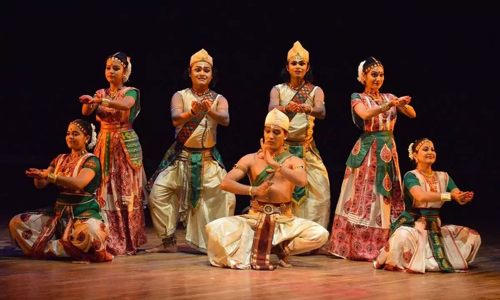

Exploring India's Culture and Heritage
Classical Dance Forms of India
Sattriya is a classical dance form that originates from the state of Assam in northeastern India. It is one of the eight classical dance forms of India, recognized for its spiritual and devotional nature. Sattriya was traditionally performed in the Sattras (monastic institutions) by male monks as part of their religious rituals. The dance is closely linked to the Vaishnavism faith and is a key element of the religious and cultural practices of Assam. Over the centuries, Sattriya has evolved and is now performed by both men and women, often during festivals, cultural events, and performances across India and abroad.
Sattriya is a classical dance form that originates from the state of Assam in northeastern India. It is one of the eight classical dance forms of India, recognized for its spiritual and devotional nature. Sattriya was traditionally performed in the Sattras (monastic institutions) by male monks as part of their religious rituals. The dance is closely linked to the Vaishnavism faith and is a key element of the religious and cultural practices of Assam. Over the centuries, Sattriya has evolved and is now performed by both men and women, often during festivals, cultural events, and performances across India and abroad.
The origins of Sattriya can be traced back to the 15th century, attributed to the saint and social reformer Srimanta Sankardev, who is credited with integrating dance into the religious rituals of the Vaishnavite movement. Sankardev's vision was to use dance, music, and drama as a means of conveying religious teachings and engaging the community in devotion. The dance form was initially performed in the monastic settings of Assam, but over time it spread to the villages and beyond. While it remained an integral part of Assamese Vaishnavism, it gradually became a prominent cultural tradition and was eventually recognized as one of India's classical dance forms by the Sangeet Natak Akademi in 2000.
Today, Sattriya continues to be a prominent part of Assam's cultural landscape. It is widely performed at cultural festivals, theatrical productions, and dance festivals across India. With its growing popularity, Sattriya has also found a global audience, with performances taking place in various parts of the world. Efforts to preserve and promote Sattriya have led to its recognition and establishment as a classical dance form by the Government of India. Modern-day Sattriya performances often incorporate contemporary elements while still staying true to the traditional roots of the dance. As a result, it continues to inspire new generations of dancers and audiences alike.
Sattriya is a highly intricate and expressive dance form that combines rhythmic footwork, hand gestures (mudras), and facial expressions to tell religious stories, often inspired by the life and teachings of Lord Krishna. The dance is characterized by its graceful movements, fluid footwork, and the use of traditional costumes. The female performers typically wear a mekhela chador (a traditional Assamese outfit), while male dancers wear dhoti and chadar. The performance involves nritta (pure dance), nritya (expressive dance), and natya (dramatic dance) elements. It is accompanied by traditional music, using instruments like the dhol, taal, flute, and cymbals, which provide the rhythmic foundation for the dance.